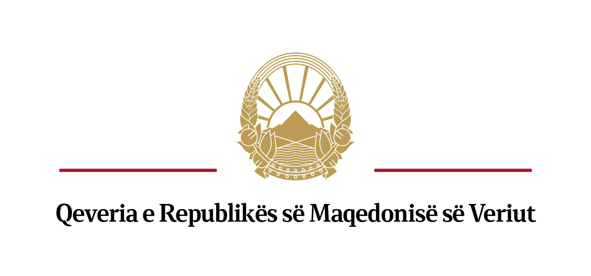

Ministria e shëndetësisë dhe Komiteti drejtues për koordinim dhe menaxhim në sistemin për menaxhim me kriza pranë Qeverisë iu drejtohet të gjithë qytetarëve të Republikës së Maqedonisë së Veriut me një kërkesë për ndihmë të tejkalimit të gjendjes së krijuar nga Kovid-19.
Ministria e shëndetësisë, përmes Komisionit për sëmundje infektive çdo ditë informon kryesisht për persona me sëmundje të rrënda dhe të sëmurë me gjendje më të rrënduar nga sëmundje me simptomatologji, persona të cilët kanë kërkuar ndihmë mjekësore. Për të pasur statistika sa më të sakta dhe për shfuqizim sa më të shpejtë të masave aktuale dhe kthimit të popullsisë në ritëm normal, nevojiten më shumë informacione edhe nga qytetarët.
Përmes solidaritetit në nivelin individual dhe përmes pjesëmarrjes së përgjegjshme në proces, të gjithë së bashku, shpejtë dhe me sa më pak humbje shoqërore do të mundemi të ndihmojmë në tejkalimin e situatës me Kovid-19 për një periudhë më të shkurtër kohore.